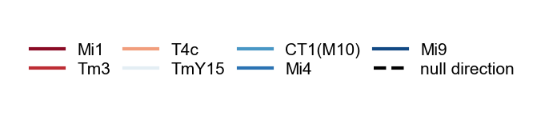
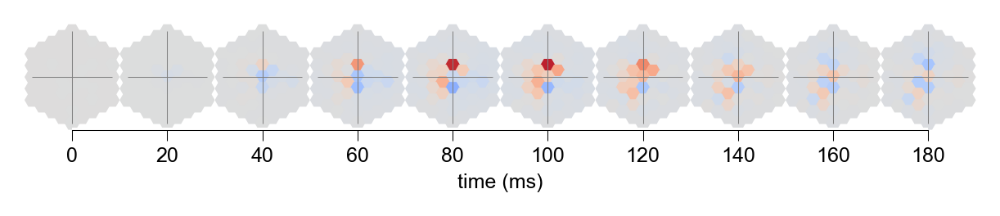

Figure 4¶
a¶
%load_ext autoreload
%autoreload 2
import matplotlib.pyplot as plt
import numpy as np
from flyvision import EnsembleView
from flyvision.analysis.clustering import check_markers
from flyvision.analysis.moving_bar_responses import MovingEdgeResponseView
from flyvision.datasets import MovingEdge
from flyvision.plots import plots, plt_utils
from flyvision.utils.activity_utils import CellTypeArray
from flyvision.utils.groundtruth_utils import tuning_curves
ensemble = EnsembleView("flow/0000")
Loading ensemble: 0%| | 0/50 [00:00<?, ?it/s]
[2024-09-28 05:21:16] ensemble:138 Loaded 50 networks.
stims_and_resps = ensemble.moving_edge_responses()
stims_and_resps['responses'] /= (norm := ensemble.responses_norm(rectified=True))
# retrieve cluster indices for averaging across best clusters
cell_types = [
"L1",
"L2",
"L3",
"L4",
"L5",
"Mi1",
"Tm3",
"Mi4",
"Mi9",
"CT1(M10)",
"T4a",
"T4b",
"T4c",
"T4d",
"T5a",
"T5b",
"T5c",
"T5d",
"Tm1",
"Tm2",
"Tm4",
"Tm9",
"CT1(Lo1)",
"TmY3",
]
cluster_indices = {}
for cell_type in cell_types:
if cell_type not in cluster_indices:
cluster_indices[cell_type] = ensemble.cluster_indices(cell_type)
[2024-09-28 05:21:39] clustering:640 Loaded L1 embedding and clustering from /groups/turaga/home/lappalainenj/FlyVis/private/flyvision/data/results/flow/0000/umap_and_clustering.
[2024-09-28 05:21:40] clustering:640 Loaded L2 embedding and clustering from /groups/turaga/home/lappalainenj/FlyVis/private/flyvision/data/results/flow/0000/umap_and_clustering.
[2024-09-28 05:21:40] clustering:640 Loaded L3 embedding and clustering from /groups/turaga/home/lappalainenj/FlyVis/private/flyvision/data/results/flow/0000/umap_and_clustering.
[2024-09-28 05:21:40] clustering:640 Loaded L4 embedding and clustering from /groups/turaga/home/lappalainenj/FlyVis/private/flyvision/data/results/flow/0000/umap_and_clustering.
[2024-09-28 05:21:42] clustering:640 Loaded L5 embedding and clustering from /groups/turaga/home/lappalainenj/FlyVis/private/flyvision/data/results/flow/0000/umap_and_clustering.
[2024-09-28 05:21:42] clustering:640 Loaded Mi1 embedding and clustering from /groups/turaga/home/lappalainenj/FlyVis/private/flyvision/data/results/flow/0000/umap_and_clustering.
[2024-09-28 05:21:42] clustering:640 Loaded Tm3 embedding and clustering from /groups/turaga/home/lappalainenj/FlyVis/private/flyvision/data/results/flow/0000/umap_and_clustering.
[2024-09-28 05:21:44] clustering:640 Loaded Mi4 embedding and clustering from /groups/turaga/home/lappalainenj/FlyVis/private/flyvision/data/results/flow/0000/umap_and_clustering.
[2024-09-28 05:21:44] clustering:640 Loaded Mi9 embedding and clustering from /groups/turaga/home/lappalainenj/FlyVis/private/flyvision/data/results/flow/0000/umap_and_clustering.
[2024-09-28 05:21:44] clustering:640 Loaded CT1(M10) embedding and clustering from /groups/turaga/home/lappalainenj/FlyVis/private/flyvision/data/results/flow/0000/umap_and_clustering.
[2024-09-28 05:21:45] clustering:640 Loaded T4a embedding and clustering from /groups/turaga/home/lappalainenj/FlyVis/private/flyvision/data/results/flow/0000/umap_and_clustering.
[2024-09-28 05:21:45] clustering:640 Loaded T4b embedding and clustering from /groups/turaga/home/lappalainenj/FlyVis/private/flyvision/data/results/flow/0000/umap_and_clustering.
[2024-09-28 05:21:45] clustering:640 Loaded T4c embedding and clustering from /groups/turaga/home/lappalainenj/FlyVis/private/flyvision/data/results/flow/0000/umap_and_clustering.
[2024-09-28 05:21:47] clustering:640 Loaded T4d embedding and clustering from /groups/turaga/home/lappalainenj/FlyVis/private/flyvision/data/results/flow/0000/umap_and_clustering.
[2024-09-28 05:21:47] clustering:640 Loaded T5a embedding and clustering from /groups/turaga/home/lappalainenj/FlyVis/private/flyvision/data/results/flow/0000/umap_and_clustering.
[2024-09-28 05:21:47] clustering:640 Loaded T5b embedding and clustering from /groups/turaga/home/lappalainenj/FlyVis/private/flyvision/data/results/flow/0000/umap_and_clustering.
[2024-09-28 05:21:49] clustering:640 Loaded T5c embedding and clustering from /groups/turaga/home/lappalainenj/FlyVis/private/flyvision/data/results/flow/0000/umap_and_clustering.
[2024-09-28 05:21:49] clustering:640 Loaded T5d embedding and clustering from /groups/turaga/home/lappalainenj/FlyVis/private/flyvision/data/results/flow/0000/umap_and_clustering.
[2024-09-28 05:21:49] clustering:640 Loaded Tm1 embedding and clustering from /groups/turaga/home/lappalainenj/FlyVis/private/flyvision/data/results/flow/0000/umap_and_clustering.
[2024-09-28 05:21:50] clustering:640 Loaded Tm2 embedding and clustering from /groups/turaga/home/lappalainenj/FlyVis/private/flyvision/data/results/flow/0000/umap_and_clustering.
[2024-09-28 05:21:50] clustering:640 Loaded Tm4 embedding and clustering from /groups/turaga/home/lappalainenj/FlyVis/private/flyvision/data/results/flow/0000/umap_and_clustering.
[2024-09-28 05:21:50] clustering:640 Loaded Tm9 embedding and clustering from /groups/turaga/home/lappalainenj/FlyVis/private/flyvision/data/results/flow/0000/umap_and_clustering.
[2024-09-28 05:21:52] clustering:640 Loaded CT1(Lo1) embedding and clustering from /groups/turaga/home/lappalainenj/FlyVis/private/flyvision/data/results/flow/0000/umap_and_clustering.
[2024-09-28 05:21:52] clustering:640 Loaded TmY3 embedding and clustering from /groups/turaga/home/lappalainenj/FlyVis/private/flyvision/data/results/flow/0000/umap_and_clustering.
from flyvision.analysis.moving_bar_responses import plot_angular_tuning
# plot the tuning across the best clusters
fig, axes, _ = plots.plt_utils.get_axis_grid(
range(4),
projection="polar",
aspect_ratio=4,
figsize=[2.95, 0.83],
wspace=0.25,
)
for i, cell_type in enumerate(["T4a", "T4b", "T4c", "T4d"]):
plot_angular_tuning(
stims_and_resps.sel(network_id=cluster_indices[cell_type][0]),
cell_type=cell_type,
intensity=1,
fig=fig,
ax=axes[i],
groundtruth=True,
groundtruth_linewidth=1.0,
average_models=True,
model_dim=2,
zorder=100
)
axes[i].set_xlabel(cell_type)

fig, axes, _ = plots.plt_utils.get_axis_grid(
range(4),
projection="polar",
aspect_ratio=4,
figsize=[2.95, 0.83],
wspace=0.25,
)
for i, cell_type in enumerate(["T5a", "T5b", "T5c", "T5d"]):
plot_angular_tuning(
stims_and_resps.sel(network_id=cluster_indices[cell_type][0]),
cell_type=cell_type,
intensity=0,
fig=fig,
ax=axes[i],
groundtruth=True,
groundtruth_linewidth=1.0,
average_models=True,
model_dim=2,
zorder=100
)
axes[i].set_xlabel(cell_type)

b¶
from datamate import namespacify
from flyvision.analysis.moving_edge_currents import CellTypeArray, MovingEdgeCurrentView
from flyvision.datasets import MovingEdge
target_types = ["T4c"]
dataset = MovingEdge(
widths=[80],
offsets=[-10, 11],
intensities=[0, 1],
speeds=[19],
height=80,
bar_loc_horizontal=0.0,
shuffle_offsets=False,
post_pad_mode="continue",
t_pre=1.0,
t_post=1.0,
dt=1 / 200,
angles=[0, 45, 90, 180, 225, 270],
)
cell_type = "T4c"
subdir = f"moving_edge_responses/{ensemble[0].checkpoints.current_chkpt_key}/currents"
---------------------------------------------------------------------------
AttributeError Traceback (most recent call last)
Input In [25], in <cell line: 2>()
1 cell_type = "T4c"
----> 2 subdir = f"moving_edge_responses/{ensemble[0].checkpoints.current_chkpt_key}/currents"
AttributeError: 'Checkpoints' object has no attribute 'current_chkpt_key'
current_views = {}
norm = CellTypeArray(ensemble.responses_norm(rectified=False),
ensemble[0].connectome)
for target_type in target_types:
if target_type not in current_views:
current_views[target_type] = MovingEdgeCurrentView(
ensemble, target_type, subdir, dataset.arg_df
)
view = current_views[target_type]
view.shape
(49, 12, 485, 2)
current_views[target_type] = view.divide_by_given_norm(norm)
current_views[target_type].shape
(49, 12, 485, 2)
hide_source_types="auto"
hide_source_types_bins=7
hide_source_types_cut_off_edge=1
hide_source_types_mode="below_cut_off"
view.shape
(49, 12, 485, 2)
inputs = namespacify(
{
cell_type: dict(majors={}, minors={})
for cell_type in target_types
}
)
for cell_type in target_types:
if cell_type not in current_views:
current_views[cell_type] = MovingEdgeCurrentView(
ensemble, cell_type, subdir, dataset.arg_df
)
view = current_views[cell_type]
inputs[cell_type].majors = view.model_selection(
cluster_indices[cell_type][0]
).filter_source_types(
hide_source_types,
hide_source_types_bins,
hide_source_types_cut_off_edge,
"below_cut_off",
)
inputs[cell_type].minors = view.model_selection(
cluster_indices[cell_type][0]
).filter_source_types(
hide_source_types,
hide_source_types_bins,
hide_source_types_cut_off_edge,
"above_cut_off",
)
current_view = current_views["T4c"]
fig, ax = current_view.model_selection(cluster_indices[cell_type][0]).plot_response(
1, 90, t_end=1.0
)
xlim_responses = ax.get_xlim()
ax.set_ylabel("voltage (a.u.)", fontsize=5)
ax.set_xlabel("time (s)", fontsize=5)
Text(0.5, 0, 'time (s)')

fig, ax, legend_fig, legend_ax = current_view.model_selection(
cluster_indices[cell_type][0]
).plot_temporal_contributions(
1,
90,
t_start=0,
t_end=1,
model_average=True,
legend=False,
sum_exc_inh=False,
only_sum=False,
max_figure_height_cm=3.3941,
panel_height_cm=3.3941,
max_figure_width_cm=4.0513,
panel_width_cm=4.0513,
hide_source_types=["T4a", "T4b", "T5c", "Mi10", "C3"]
)
ylim = ax.get_ylim()
ax.set_ylabel("current (a.u.)", fontsize=5)
Text(0, 0.5, 'current (a.u.)')


fig, ax, _ = current_view.model_selection(
cluster_indices[cell_type][0]
).plot_spatial_contribution_grid(
t_start=0,
t_end=1,
)

d¶
from datamate import Namespace
from flyvision import utils
from flyvision.utils import hex_utils
from flyvision.datasets.dots import SpatialImpulses
from flyvision.plots import plt_utils
from flyvision.utils.activity_utils import StimulusResponseIndexer
from flyvision.analysis.views import plot_strf
ensemble = EnsembleView("flow/0000", "best", "validation", "epe")
Loading ensemble: 0%| | 0/50 [00:00<?, ?it/s]
[2024-09-12 15:01:16] Loaded 50 networks.
dt = 1/200
subdir = f"spatial_impulses_responses/{ensemble[0].checkpoints.current_chkpt_key}"
config = Namespace(
impulse_durations=[0.005, 0.02],
max_extent=4,
dot_column_radius=0,
bg_intensity=0.5,
t_stim=2,
dt=dt,
n_ommatidia=721,
t_pre=1.0,
t_post=0,
intensity=1.0,
mode="impulse",
device="cuda",
)
dataset = SpatialImpulses(**config)
arg_df = dataset.arg_df
arg_df["uv"] = list([list(v) for v in zip(arg_df.u, arg_df.v)])
cell_types = ensemble[0].connectome.unique_cell_types[:].astype(str)
strf_view = StimulusResponseIndexer(arg_df,
CellTypeArray(None, cell_types=cell_types),
dataset.dt,
0,
stim_sample_dim=1,
temporal_dim=2)
# relevant stimuli arguments
intensity = 1
stim_arg_index = StimulusResponseIndexer.where_stim_args_index_static(dataset.arg_df, intensity=intensity).to_numpy()
# relevant time window
t_start = 0
t_end = 0.250
time = (
np.arange(
0,
ensemble[0]
.dir[subdir]
.network_states.nodes.activity_central.shape[1],
1,
)
* dataset.dt
- dataset.t_pre
)
temporal_index = np.arange(len(time))[(time >= t_start) & (time <= t_end)]
start_index = temporal_index.min()
stop_index = temporal_index.max()
strf_responses = ensemble.stored_responses("spatial_impulses_responses",
central=True,
slice=(stim_arg_index,
slice(start_index,
stop_index)))
arg_df = dataset.arg_df.iloc[stim_arg_index]
arg_df.reset_index(drop=True, inplace=True)
norm = ensemble.responses_norm()
# update ir view
strf_view = StimulusResponseIndexer(arg_df,
CellTypeArray(strf_responses, cell_types=cell_types),
dataset.dt,
0,
stim_sample_dim=1,
temporal_dim=2,
time=time[start_index:stop_index])
strf_view = strf_view.divide_by_given_array(norm[:], dims=(0, -1))
from flyvision.utils.color_utils import flash_response_color_labels, adapt_color_alpha
from flyvision.plots.figsize_utils import fit_panel_size
from scipy.signal import find_peaks
srf_cell_types = [
"Mi1", "Tm3", "Mi4", "Mi9", "CT1(M10)",
"Tm1", "Tm2", "Tm4", "Tm9", "CT1(Lo1)"
]
def strf_to_srf(x):
extr_index = find_peaks(np.abs(x[:, x.shape[1]//2]))[0]
if extr_index.any():
extr_index = extr_index[0]
else:
extr_index = 0
return x[extr_index].squeeze()
mean_srfs = {}
for cell_type in srf_cell_types:
strfs = strf_view.where_stim_args(t_impulse=0.02)[cell_type][cluster_indices[cell_type][0]]
x = strfs[:].mean(axis=0).squeeze().T
# subtracting the spatial average at timepoint 0 after averaging to center
x -= x[0].mean(axis=0)
mean_srfs[cell_type] = strf_to_srf(x)
cell_type = "Mi9"
strfs = strf_view.where_stim_args(t_impulse=0.02)[cell_type][cluster_indices[cell_type][0]]
x = strfs[:].mean(axis=0).squeeze().T
# subtracting the spatial average at timepoint 0 after averaging to center
x -= x[0].mean(axis=0)
nodes = ensemble[0].connectome.nodes.to_df()
from flyvision.utils.hex_utils import hex_rows
from flyvision.plots.plt_utils import ax_scatter
from flyvision.plots.plots import hex_scatter
x, y = hex_rows(2, 5)
fig, axes, pos = ax_scatter(
x, y, figsize=[3.5, 2], hpad=0, wpad=0.1, wspace=-0.5, hspace=-0.4
)
axes = np.array(axes).reshape(2, 5)
for i, row in enumerate(np.array(srf_cell_types).reshape(2, 5)):
for j, cell_type in enumerate(row):
crange = np.max(np.abs(mean_srfs[cell_type]))
u, v = nodes[nodes.type==cell_type][["u", "v"]].values.T
fig, ax, _ = hex_scatter(
dataset.dots.u,
dataset.dots.v,
mean_srfs[cell_type],
cmap=plt.cm.coolwarm,
vmin=-crange,
vmax=crange,
figsize=[3, 3],
cbar=False,
fig=fig,
ax=axes[1 - i, j],
)
ax.set_xlabel(cell_type, fontsize=6, labelpad=-10)
for ax in axes.flatten():
flash_response_color_labels(ax)

e¶
from flyvision.datasets.dots import CentralImpulses
config = Namespace(intensity=1,
impulse_durations=[5e-3, 20e-3, 50e-3, 100e-3, 200e-3, 300e-3],
dt=1 / 200,
dot_column_radius=0,
t_stim=2,
n_ommatidia=721,
t_pre=1.0,
t_post=0,
mode="impulse",
device="cuda",
)
dataset = CentralImpulses(**config)
dt = config.dt
central_impulse_responses = ensemble.stored_responses("central_impulses_responses", central=True)
cir_view = StimulusResponseIndexer(
dataset.arg_df,
CellTypeArray(central_impulse_responses, connectome=ensemble.connectome),
dataset.dt,
dataset.t_pre,
stim_sample_dim=1,
temporal_dim=2,
)
norm = ensemble.responses_norm(rectified=False)
trf_cell_types = np.array(
[
"Mi1",
"Tm3",
"Mi4",
"Mi9",
"CT1(M10)",
"Tm1",
"Tm2",
"Tm4",
"Tm9",
"CT1(Lo1)",
"L1",
"L2",
"L3",
"L4",
"L5",
]
).reshape(5, 3, order="F")
cir_view = (cir_view
.divide_by_given_array(norm[:], dims=(0, -1))
.between_seconds(-cir_view.dt, 1.0)
)
from flyvision.plots.plt_utils import truncate_colormap
durations = [0.02, 0.05, 0.1, 0.2, 0.3]
on_cmap = truncate_colormap(plt.cm.Blues_r, minval=0., maxval=0.4).resampled(len(durations))
off_cmap = truncate_colormap(plt.cm.Blues_r, minval=0.5, maxval=0.9).resampled(len(durations))
cmaps = {
1.: [on_cmap(i) for i in range(on_cmap.N)][::-1],
0: [off_cmap(i) for i in range(off_cmap.N)][::-1]
}
fig, axes = fit_panel_size(
5,
3,
max_figure_height_cm=5.35,
max_figure_width_cm=8,
panel_width_cm=8 / 3,
panel_height_cm=5.35 / 10,
).axis_grid(wspace=0.6, hspace=0.0, as_matrix=True)
for i, row in enumerate(trf_cell_types):
for j, cell_type in enumerate(row):
ax = axes[i, j]
for q, duration in enumerate(durations[::-1]):
for intensity in [0, 1]:
color = cmaps[intensity][q] #plt.cm.Blues(256) if intensity == 1 else plt.cm.Blues(128)
# linestyle = "solid" if intensity == 1 else "dashed"
zorder = 1 if intensity == 1 else 0
r = (
cir_view.where_stim_args(t_impulse=duration, intensity=intensity)
.cell_type(cell_type)[cluster_indices[cell_type][0]]
)
trf = r[:].squeeze().T
mean = trf.mean(axis=1)
# subtract baseline after model averaging to plot it centered
mean = mean - mean[[0]]
# ci = np.quantile(trf, [0.25, 0.75], axis=1)
ax.plot(r.time, mean, linewidth=0.5, color=color, zorder=zorder)
ax.hlines(
mean[0],
r.time.min(),
r.time.max(),
linewidth=0.5,
color="0.5",
zorder=-1,
)
plt_utils.rm_spines(ax)
ax.yaxis.set_label_position("right")
ax.set_ylabel(
cell_type,
fontsize=6,
rotation=0,
ha="left",
va="center",
labelpad=0.1,
)
# ylim = np.array)
ylim = np.array(ax.get_ylim())
ylim = (-max(abs(ylim)), max(abs(ylim)))
ax.set_ylim(ylim)
for ax in axes.flatten():
flash_response_color_labels(ax)

stimulus
import torch
# relevant time window
t_start = -dataset.dt
t_end = 1.0
time = (
np.arange(
0,
ensemble[0]
.dir[subdir]
.network_states.nodes.activity_central.shape[1],
1,
)
* dataset.dt
- dataset.t_pre
)
temporal_index = np.arange(len(time))[(time >= t_start) & (time <= t_end)]
start_index = temporal_index.min()
stop_index = temporal_index.max()
fig, axes = fit_panel_size(
5,
3,
max_figure_height_cm=5.35,
max_figure_width_cm=8,
panel_width_cm=8 / 3,
panel_height_cm=5.35 / 10,
).axis_grid(wspace=0.6, hspace=0.0, as_matrix=True, unmask_n=1)
ax = axes[0, 0]
# fig, ax = plt.subplots(figsize=[4, 4])
eps = 0.005
for j, duration in enumerate(durations[::-1]):
for intensity in [0, 1]:
color = cmaps[intensity][j]
# linestyle = "solid" if intensity == 1 else "dashed"
zorder = 1 if intensity == 1 else 0
index = cir_view.where_stim_args_index_static(
dataset.arg_df, intensity=intensity, t_impulse=duration, u=0, v=0
)
stim = dataset[index][0][start_index - 1 : stop_index, 721 // 2].cpu()
indices = torch.nonzero(torch.diff(stim))[:, 0]
for i, index in enumerate(indices):
ax.vlines(
time[index],
stim[index]+ (eps if intensity == 1 else -eps),
stim[index + 1]+ (eps if intensity == 1 else -eps),
linewidth=0.5,
color=color,
zorder=zorder,
)
try:
ax.hlines(
stim[index + 1] + (eps if intensity == 1 else -eps),
time[index],
time[indices[i + 1]],
linewidth=0.5,
color=color,
zorder=zorder,
)
except IndexError:
ax.hlines(
stim[index + 1] + (eps if intensity == 1 else -eps),
time[index],
time[-1],
linewidth=0.5,
color=color,
zorder=zorder,
)
plt_utils.rm_spines(ax)
ylim = np.array(ax.get_ylim())
ylim = (-max(abs(ylim)), max(abs(ylim)))
ax.set_ylim(ylim)
(-1.0554999949876218, 1.0554999949876218)

fig, axes = fit_panel_size(
5,
3,
max_figure_height_cm=5.35,
max_figure_width_cm=8,
panel_width_cm=8 / 3,
panel_height_cm=5.35 / 10,
).axis_grid(wspace=0.6, hspace=0.0, as_matrix=True, unmask_n=1)
ax = axes[0, 0]
for j, duration in enumerate(durations[::-1]):
for intensity in [0, 1]:
color = cmaps[intensity][j]
# linestyle = "solid" if intensity == 1 else "dashed"
zorder = 1 if intensity == 1 else 0
index = cir_view.where_stim_args_index_static(
dataset.arg_df, intensity=intensity, t_impulse=duration, u=0, v=0
)
stim = dataset[index][0][start_index-1:stop_index, 721//2].cpu()
ax.plot(stim, linewidth=0.5, color=color, zorder=zorder)
ax.hlines(
0,
time.min(),
time.max(),
linewidth=0.5,
color="0.5",
zorder=-1,
)
plt_utils.rm_spines(ax)
ylim = np.array(ax.get_ylim())
ylim = (-max(abs(ylim)), max(abs(ylim)))
ax.set_ylim(ylim)
(-1.05, 1.05)

Extended Data Fig. 9¶
T4c¶
strfs = strf_view.where_stim_args(t_impulse=0.02)["T4c"][cluster_indices["T4c"][0]]
x = strfs[:].mean(axis=0).squeeze().T
#subtracting the spatio-temporal baseline after averaging
x -= x[0].mean(axis=0)
fig, axes = plot_strf(strfs.time, x)

T5c¶
strfs = strf_view.where_stim_args(t_impulse=0.02)["T5c"][cluster_indices["T5c"][0]]
x = strfs[:].mean(axis=0).squeeze().T
#subtracting the spatio-temporal baseline after averaging
x -= x[0].mean(axis=0)
fig, axes = plot_strf(strfs.time, x)

f¶
from flyvision import NetworkView
from flyvision.analysis.optimal_stimuli import plot_stim_response, OptimalStimulus, RegularizedOptimalStimulus
def load_optstim(network_view, cell_type):
subdir = (
f"naturalistic_stimuli_responses/{ensemble[0].checkpoints.current_chkpt_key}"
)
dir = network_view.dir[subdir]["optstims"][cell_type]
optstim = OptimalStimulus(dir.stimulus[:], dir.response[:])
dir = network_view.dir[subdir]["regularized_optstims"][cell_type]
return RegularizedOptimalStimulus(
optstim,
dir.stimulus[:],
dir.response[:],
dir.central_predicted_activity[:],
dir.central_target_activity[:],
dir.losses[:],
)
network_view = ensemble[0]
optstims = load_optstim(network_view, "T4c")
stim_resp_plot = plot_stim_response(
optstims.regularized_stimulus,
optstims.response,
1 / 100,
*network_view.get_uv("T4c"),
figsize=[5, 1.6],
ylabel=None,
label_peak_response=False,
)

optstims = load_optstim(network_view, "T5c")
stim_resp_plot = plot_stim_response(
optstims.regularized_stimulus,
optstims.response,
1 / 100,
*network_view.get_uv("T5c"),
figsize=[5, 1.6],
ylabel=None,
label_peak_response=False,
)